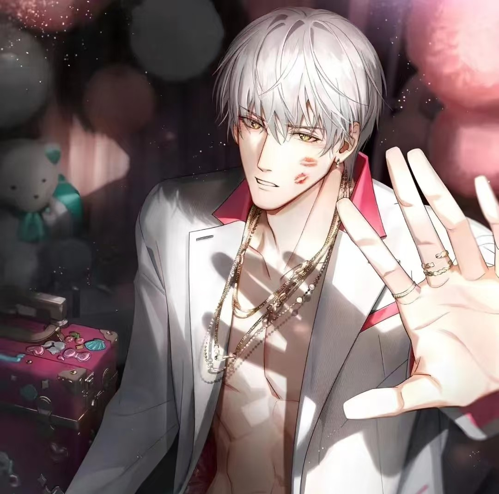

齐司礼是手游《光与夜之恋》男主角之一, 中文配音 赵路、日文配音岸尾大辅, 外文名 Sariel。其身份为国际顶级设计师, 曾任万甄集团Warson品牌设计总监并主导Pristine品牌复兴, 白发金瞳的外貌与INFJ人格突显其清冷气质,代表花为昙花。 实际为灵族九尾狐,曾担任灵族大将军,与你存在跨越千年的羁绊, 公历生日9月1日对应真实生辰农历八月十五。

十年前,曾用一场秀改变了整个业界风向,而后隐退。后因某些事接受陆沉邀请, 重新出现到世人眼前,担任万甄集团Warson品牌设计中心总监,负责Warson旗下全部的高级定制系列, 并接手了副线Pristine品牌。同时也是你的上司兼导师。现已从万甄离职。 有着纯白色的头发，淡金色/琥珀色的眼眸,长得极为漂亮。看起来清贵倨傲,疏离淡漠，难以接近。 来自灵族。在灵族的地位很高,实力很强,被人敬仰也被人敬畏。本体是九尾狐。 年龄未知。其专属光影道具石制围棋描述语中提到“和天地同岁，怎么会在乎孤独”。 在古代是灵族的大将军。如今是时尚界公认的顶级设计师，是诸多设计师的启明星、北极星。 游戏以公历9月1日作为齐司礼的生日,但在卡牌旧梦阑珊中可知其真实的生日为农历八月十五。 9月1日是齐司礼在进入万甄时随手编写的生日日期。
纯情、傲娇、毒舌，语言能力很强，对待他认为不合格的事物完全不留情面, 但却能够从专业的角度给出无法反驳的理由。本质上是个对周边人、事、物洞察仔细，活得沉静且透彻的人。 对待感情表面上容易害羞，也有着强势且坦荡的一面。 在古代曾经是个张扬而意气风发的青年，而当前性格 截然不同。